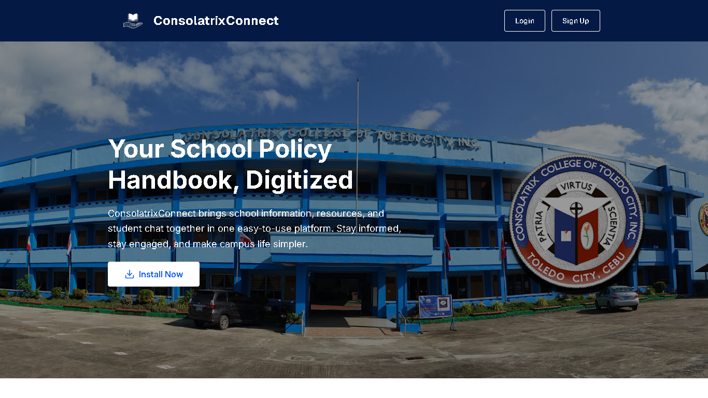
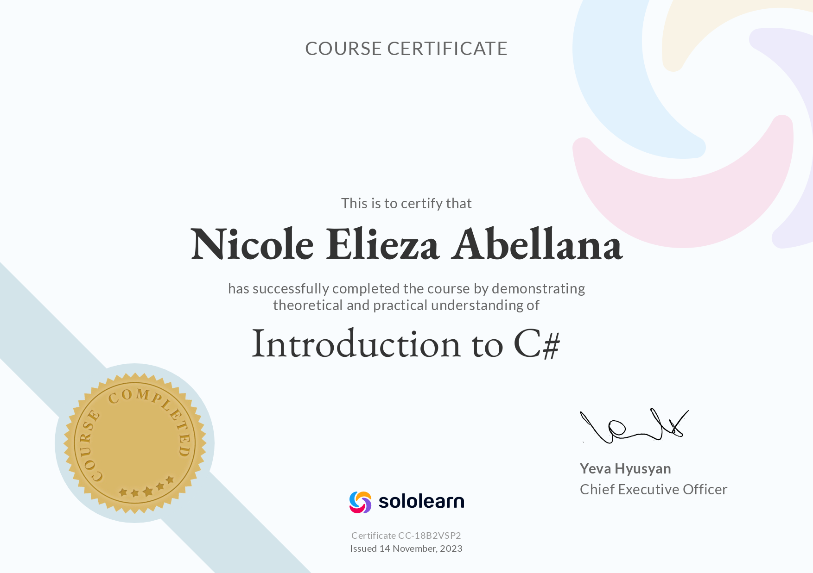
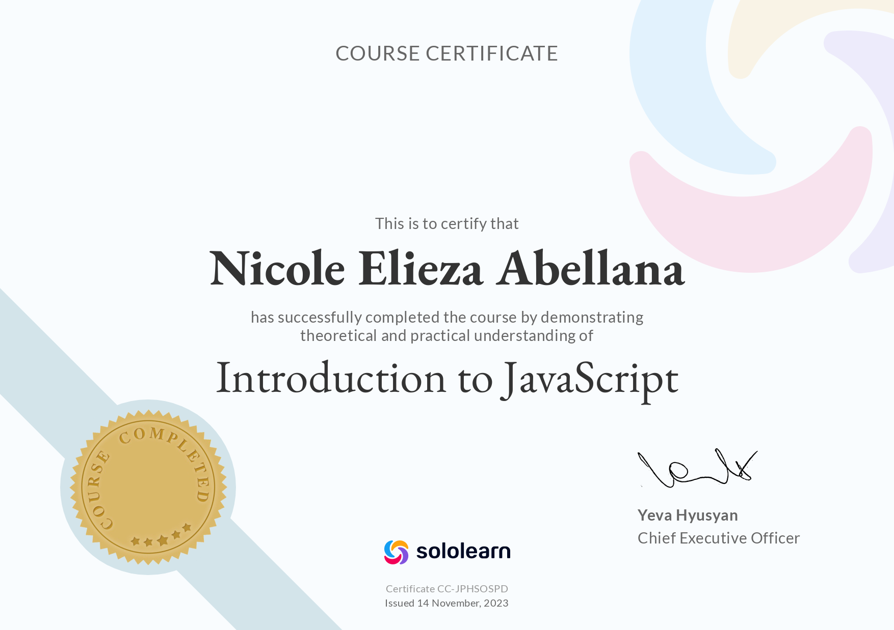
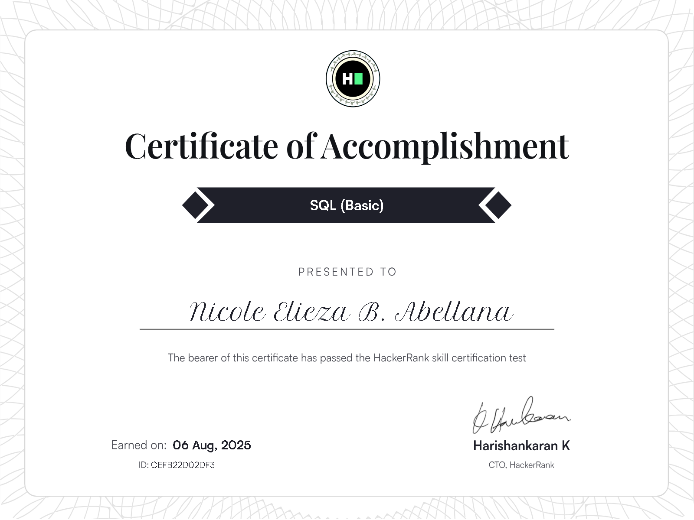
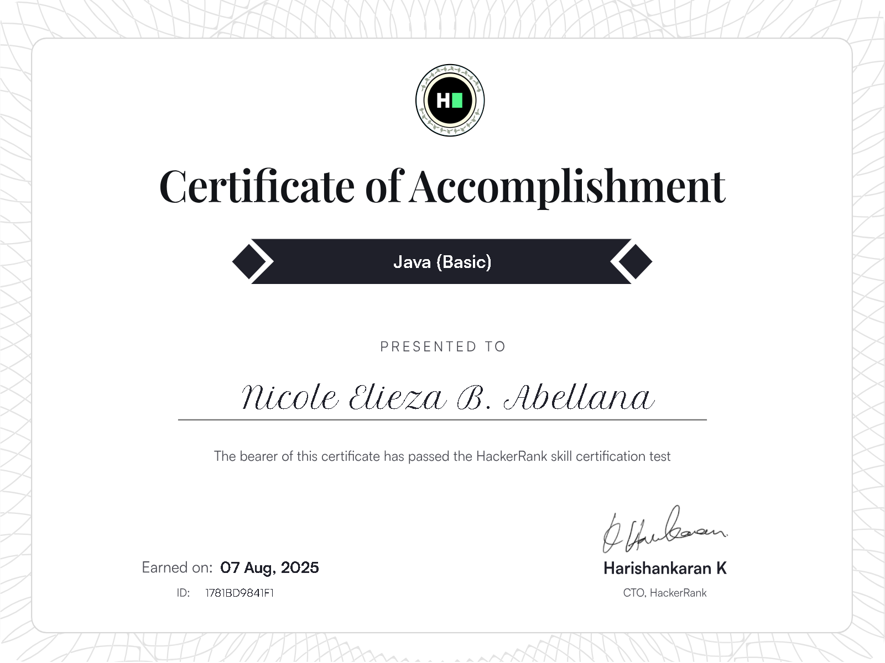
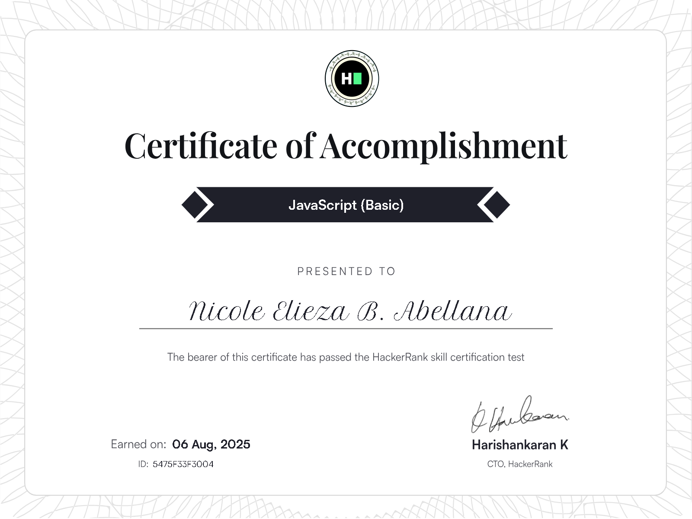

Welcome to my portfolio! My name is Nicole Elieza Abellana, and I am a Bachelor of Science in Information Technology student. I am passionate about web development, content creation, and using technology to solve real-world problems. Explore my portfolio to learn more about my skills, projects, and experiences.
ABOUT ME
I am a Bachelor of Science in Information Technology student with a strong interest in web development, content creation, and business. Throughout my academic journey, I have developed technical skills in web development, database management, and system troubleshooting. I enjoy building functional and user-friendly digital experiences, creating engaging online content, and exploring how technology and creativity can support business growth. I’m especially interested in combining technical solutions with creative strategy to bring ideas to life and make information more accessible and impactful. I am eager to continuously learn, improve my skills, and contribute meaningfully to the industry.
EDUCATIONAL BACKGROUND
Elementary: West Bay Learning Center – 2015
Junior High School: West Bay Learning Center – 2019
Senior High School: Consolatrix College of Toledo City, Inc. – STEM – 2021
College: Consolatrix College of Toledo City, Inc. – BSIT – 2026
TECHNICAL SKILLS & TOOLS
- PHP (Basic)
- Java (Basic)
- JavaScript (Basic)
- Bootstrap
- Google Sites
- Responsive Design
- React Native
- HTML
- CSS
- MySQL
- Firebase
- MongoDB
- GitHub
- Visual Studio Code
- Postman
- Canva
- CapCut
- Grok
- Windows OS
- Google Workspace
PROJECTS & CAPSTONE
Consolatrix Connect: A Digital Handbook Information And Chat System for Consolatrix College Of Toledo City, Inc.
Project Manager
Technologies Used: JavaScript, React, Node.js, MongoDB
This capstone project presents Consolatrix Connect, a web-based platform developed to digitize and streamline the distribution of school policies, guidelines, and regulations. Designed primarily for students, the system also allows parents to access information using their child’s account. Key features include real-time chat with the school admin (not teachers), notifications for new announcements, policies, and violations, a violation records page, and a dashboard showcasing nine boxes of categorized school information. By replacing printed handbooks and centralizing communication, the platform improves accessibility and supports more efficient engagement between students, parents, and the school administration.
Demo video link: https://www.youtube.com/watch?v=bhIrvc11EOg
GitHub link: https://github.com/Goldenrose2004/New-ConsoaltrixConnect

INTERNSHIP
Company Name: Toledo City Water District
Duration: June 16, 2025 - September 27, 2025
Position: IT Intern
Tasks & Responsibilities: Handled coupon verification and organization, digitized documents through scanning, supported water bill processing, performed basic technical troubleshooting, and assisted staff with technical concerns.
My OJT experience allowed me to develop greater patience, as my tasks required concentration, consistency, and dedication. I also realized that not everyone will treat you in a friendly manner, but they can still teach you valuable moral lessons in life and help you grow stronger emotionally and professionally. It also tested my adaptability in different situations. I learned that you have to be flexible, open to change, and willing to step outside your comfort zone. Having the willingness to learn and the accountability to admit and correct mistakes are essential for personal and professional growth. I also understood the importance of communication in the workplace. Always make sure to ask for clear and proper instructions to avoid misunderstandings and further errors. Clarifying expectations not only improves performance but also builds trust with supervisors and colleagues. Most importantly, I learned that health is wealth. No matter how busy work becomes, it is important to take short breaks, rest when needed, and manage stress properly. Taking care of yourself allows you to stay productive, focused, and motivated throughout your responsibilities.
Certifications & Trainings
Introduction to C#

Introduction to Java
Introduction to JavaScript

SQL (Basic)

C# (Basic)
Java (Basic)

JavaScript (Basic)

Python (Basic)
LEARNING JOURNEY
Reflecting on my journey as an IT student, I realize that the challenges I faced, both inside and outside the classroom, have shaped me into the person I am today. Balancing academic projects, school activities, and learning new technologies required discipline, perseverance, and a willingness to step out of my comfort zone. Each project, each assignment, and each problem I solved was not just about technical skills—it was a lesson in patience, critical thinking, and resilience. I learned that growth often comes from embracing discomfort and facing challenges head-on. Mistakes were not failures but opportunities to learn, improve, and develop a stronger sense of accountability. I also discovered the importance of adaptability; technology evolves rapidly, and staying open to learning and change is essential not only for a career in IT but also for navigating
CONTACT INFORMATION
RESUME
PHONE
+63 9296191024
GITHUB
DECLARATION & ETHICS
I, Nicole Elieza Abellana, hereby declare that all the information, projects, and content presented in this e-portfolio are my own original work. I have made sure to properly acknowledge any sources, references, or contributions where necessary. This portfolio reflects not only my academic efforts but also my personal growth, creativity, and dedication as an IT student. I created this with integrity, honesty, and respect for academic and data privacy policies, and it represents my sincere commitment to learning, responsibility, and ethical practice.